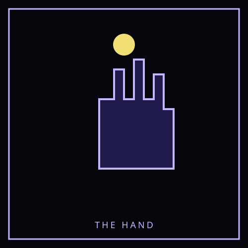
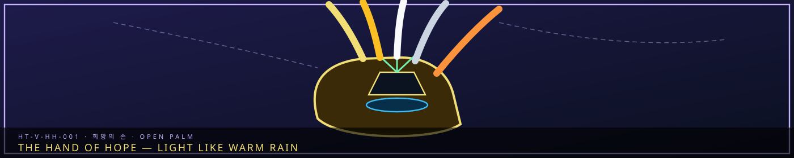

HT-V-HH-001Bonded hope entity
STATUS: ARCHIVE VERIFIED |
CLEARANCE: LEVEL-4 OVERSIGHT |
PROTOCOL: REVERIE DIRECTORATE
ARTICLE
DISCUSSION
SOURCE
HISTORY
YEAR 4,238 · DAWN OF HOPE
HOPE TRANSFORMATION
The Hand of Hope — 희망의 손
“Hope is not the opposite of Han. Hope is Han that agreed to be carried.”

Overview
The Hand of Hope — 희망의 손 is a Hope Transformation — sorrow that the Hand of Hope turned into a bonded hope entity without erasing the wound that made it. Unlike a Sorrow Entity, it is not contained in a cell and does not yield M.A.W. by extraction. It remains stable only while the bond holds.
Hope Transformations sit beside Sorrow Entities, not inside them. The Reverie Directorate catalogues Sorrow under SECC. Dawn Initiative bearers catalogue Hope under HT designations. The grief is still present; it is made usable.
Classification
| Designation | HT-V-HH-001 |
|---|---|
| Registry | HT-V-HH-001 |
| Category | Hope Hand / Hope Transformation |
| Aspect | Hope-Hand |
| Coherence | V — Sovereign |
| Intensity | Ω — Radiant |
| Manifestation | Hybrid [H] — Subject/field transformation presence |
| Status | Unique, stable current-cycle transformation |
Appearance
The Hand of Hope manifests as a vast luminous hand formed from gold, amber, white, silver, and orange Hope-crystal. It may appear as a single hand above a district, a pair of hands around the Weeping, or a humanoid figure whose arms extend into networks of light.
Its palm contains a shifting image of the Alpha Tree and the Weeping. Its fingers are not solid at the tips; they separate into streams that pass through foundations, streets, and bodies without physically injuring them.
The Hand does not shine like a weapon. Its light resembles warm rain seen through dawn fog.
Origin
The Hand of Hope formed when The Kind Healer blessed its twelfth person: a Cheonbulok child burning with inherited rage and unable to sleep, eat, or stop fighting.
In previous cycles, the twelfth blessing completed the transformation chain and produced The Dawn of Mourning. In the current cycle, the child’s rage had already been touched by shared sorrow, the Maw’s song, and the altered purpose of the Absolvohan. The twelfth blessing did not become a final judgment.
The entity changed into a radiant form that could distribute sorrow instead of collecting it. The R.D. named the new manifestation The Hand of Hope because it reached outward without taking ownership of the people it touched.
Hope function
The Hand of Hope distributes concentrated sorrow so that people can feel it together without being overwhelmed by a single unbearable mass. A fraction of that sorrow transforms into Hope Entities. The remainder stays sorrow and must still be carried.
- Spread Han through the Weeping and city foundations without a focused destructive release.
- Reduce the likelihood of Fracture during a shared emotional event.
- Transform approximately 15% of affected sorrow into Hope resonance under the current-cycle conditions.
- Create new Hope Entities from compatible sorrow and living connection.
- Calm, free, or relieve Sorrow Entities without automatically changing their nature.
The Hand is medicine, not a cure. It cannot transform all sorrow, erase Han, or guarantee that every person will experience hope in the same way.
Bearer cost
The transformation is bearer-dependent. If the bond fails, the hope entity destabilizes rather than reverting to a contained Sorrow Entity.
See Hope Transformations and Dawn of Hope.
CANONICAL CROSS-LINKS